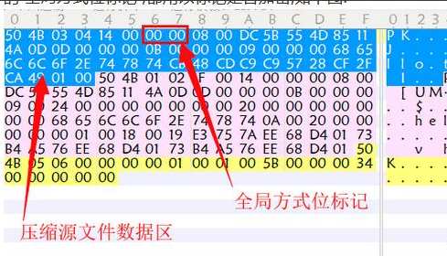
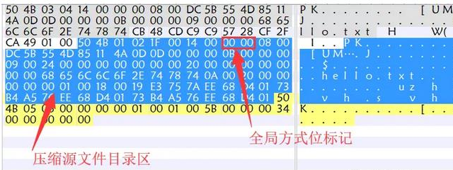
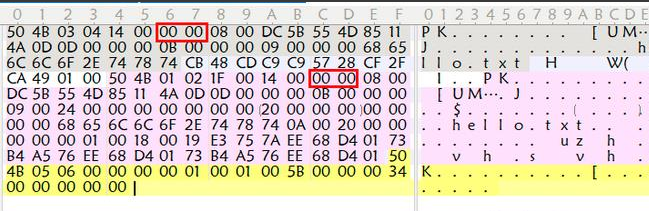
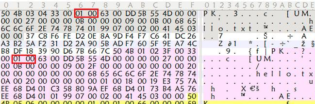
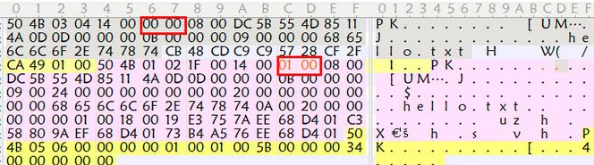

[TOC]
前言：拖了很久的MISC它来了，作者入门CTF第一个方向就是选择MISC的，当然它确实好入门，知识研究面不深，重在积累，研究面比较广，但我认为坏处就在这，技术不精，它重在让我了解CTF其它方向的知识，MISC比较适合作为你以后准备转方向的基础。
虽说我已经转PWN方向，学了一年的MISC，有幸参加过省级CTF线下赛、盘古石取证杯，于心不忍抛弃这些积累知识点，我就想把我以前学到、积累过的知识点在这里系统地总结起来呈现给大家。
杂项前传介绍
不多说，杂项就是“杂”，什么东西都有，Miscellaneous 简称 MISC，意思是杂项，混杂的意思。
杂项大致有这几种类型：
1、隐写：图片（webp、png、jpg、gif）、音频（mp4、mov等）、视频（mp4等）、其它。
2、压缩包处理：zip、rar、7z等压缩包密码爆破、解压、拼接。
3、流量分析：计算机网络协议、文件传输、USB、WIFI。
4、数字取证：日志分析、内存取证分析、文件镜像取证、电子取证。
5、脑洞题：说不尽…，多是送分或者压分、彩蛋题。
工具说明：Kali（binwalk、foremost）、010editor或者winhex、winrar、WPS
文件类型识别
杂项题目主要是以文件附件作为题目，但是给的文件不一定是有后缀名的，这就需要我们识别这些文件，当然你可以用010editor/winhex等工具查看16进制/ASCII码去辨别特征判断类型，也可用file命令：
file命令：
file 命令实际上是一个命令行工具，用来查看文件类型。
使用方法：
将文件复制到 kail 或者带有 file 工具的系统中，使用 file 查看文件。

然后将后缀名补上就可以正常打开了。
010editor/winhex
010Editor 是一款快速且强大的十六进制编辑器。用来编辑二进制文件。有一个友好易于使用的界面，无限次的 undo 和 redo 操作。另外还可以打印 x 十六进制的字节或者以书签的方式标出某些重要的字节。我们可以通过使用 010Editor 查看文件的头部来判断类型。
以下是我积累总结出的文件头：
| 文件类型 | 文件头 |
|---|---|
| JPEG(jpg) | FFDSFFE1 |
| PNG(png) | 89504E47 |
| GIF(gif) | 47494638 |
| TIFF(tif) | 49492A00 |
| Windows Bitmap(bmp) | 424DC001 |
| ZIP Archive(zip) | 504B0304 |
| RAR Archive(rar) | 52617221 |
| Adobe Photoshop(psd) | 38425053 |
| Rich Text Format(rtf) | 7B5C727466 |
| XML(xml) | 3C3F786D6C |
| Adobe Acrobat(pdf) | 255044462D312E |
| Wave(wav) | 57415645 |
| pcap(pcap) | D4C3B2A1 |
| HTML(html) | 68746D6C3E |
用010editor举个例子：

这里的文件头将贯穿你的MISC生涯，务必牢记这些文件头特征，以备不时之需！
文件分离
介绍了文件类型的识别方法了，接下来来讲一下文件分离。
文件分离的原因：
在 CTF 这个充满脑洞的比赛中，出题人往往会以一些稀奇古怪的出题方式出题，因此你可以常常看见暴打出题人等字眼出现在比赛论坛中。在 CTF 中一个文件中隐藏着另外其他文件的题目是经常有的。这就需要掌握文件分离的技巧来应对。下面介绍几种方法：
Binwalk
工具介绍：
Binwalk 是一个自动提取文件系统，该工具可以自动完成指定文件的扫描，智能发掘潜藏在文件中所有可疑的文件类型及文件系统。相比于之前介绍的 file 命令行工具来说，file 只能把一个文件识别成一个类型的文件，很难看出是否隐藏着其他的文件，Binwalk 就能很好的完成这项任务。
建议在Linux安装，Windows安装不太建议，比较鸡肋而且还会有电脑环境污染
后续你从事网安信安行业时，或者此时打CTF尤其是杂项这个方向，工具、脚本、环境配置特别多，一道MISC题用十个工具解答也不惊讶，而且稍不注意下载破解版、私人汉化的工具可能会挂马，导致计算机中毒！！，再者很多工具和环境都是要求Linux系统的，所以建议还是安装一台Kali或者Ubuntu虚拟机系统更好。
作者的MISC工具，忒多！！！


binwalk如何安装？自行解决。
Binwalk命令分离misc文件（-e全名就是extract缩写）：
|
|
若提取成功则会生成一个文件名extracted的目录，目录中存放的就是提取出的文件。
Foremost
工具介绍：
foremost 该工具通过分析不同类型文件的头、尾和内部数据结构，同镜像文件的数据进行比对，以还原文件。它默认支持 19 种类型文件的恢复。用户还可以通过配置文件扩展支持其他文件类型。
有时候 binwalk 无法正确分离出文件，这时候就可以使用 foremost，将目标文件复制到 kali中，在终端中使用命令行进入文件所在文件夹，使用如下命令：
|
|
执行成功后会在目标文件的文件目录下生成我们设置的目录，目录有中按照文件类型分离出文件。
手动提取
这个需要掌握！！在之前文件识别中提到这个工具，手动分离文件也可以使用这个工具拖动想要分离的部分。

右键->选择->保存选择。然后根据需要分离的文件类型选择后缀名。
文件提取小总结
凡事不要慌，binwalk+foremost 合体！
隐写术
图片隐写术
遇到图片隐写，直接binwalk+foremost连招。
LSB隐写
LSB 隐写，也就是最低有效位 (Least Significant Bit)。图片中的像数一般是由三原色组成，由这三种原色可以组成其他各种颜色，例如在 PNG 图片的储存中，每个颜色会有 8bit，LSB 隐写就是修改了像数中的最低的 1bit，写入加密信息，而人眼无法注意到前后的变化。
例如此图看起只是六只环保色猪头，但是其中包含了一张隐藏的二维码，我们可以通过工具 Stegsolve.jar 打开此图，然后通过下方的按钮切换到 Gray bits，可以看到左上角出现了隐写在该通道的二维码，扫描二维码即可得到 flag。
这里取一张网上的MISC-WP的图例：

文件格式缺失&GIF隐写
一张名为“此为 gif 图片.gif”的文件，打开发现了报错。
我们将其拖入 winhex 中查看。在 CTF 中有的时候会需要我们去修复图片，这对我们对于图片的文件结构要有了解。找到 gif 的文件格式，然后对照破损的文件对其进行修复。我们可以用工具一帧一帧的观察图片，Stegsolve 就带有这种功能。
Stegsolve —> Analyse —> Frame Brower

图片隐写查看器——stegsolve
LSB 隐写、一帧一帧的观察图片，都使用到了这个工具：
今天做 CTF 隐写术的题偶然发现一隐写图片查看的神器——stegsolve，分享给大家stegsolve 下载地址：http://www.caesum.com/handbook/Stegsolve.jar
stegsolve 安装配置：配置好 Java 环境变量（就是需要安装 Java，然后配环境变量，具体的配置过程上网一搜一堆，这里就不赘述）配置好环境之后直接打开就可以使用😄。
上面是软件打开的界面，界面简单。主要供能为 analyse，下面对 Analyse 下面几个功能键作简单介绍：
File Format:文件格式，这个主要是查看图片的具体信息；
Data Extract:数据抽取，图片中隐藏数据的抽取；
Frame Browser:帧浏览器，主要是对 GIF 之类的动图进行分解，动图变成一张张图片，便于查看；
Image Combiner:拼图，图片拼接。
音视频隐写术
**音频相关的 CTF 题目主要使用的隐写策略，主要分为 MP3隐写、LSB隐写、波形隐写、频谱隐写等。
使用的工具：
● Audacity，ocenaudio 音频编辑的工具软件；
● Mp3stego 将需要加密的数据压缩加密隐藏在 MP3 文件中；
● video to Picture 可以将视频的每帧提转换成图片；
● QR Research ctf 中常用的二维码识别软件；
● mageMagick 是一个免费的创建、编辑、合成图片的软件。


除了摩斯密码还有SSTV等等，可以上网搜。
MP3隐写术
MP3 隐写两种方式：
第一种：题目中给了密码了，用 mp3stego 去解密；
第二种：如果在题目中没有给 key，而附件只给了一个 MP3，那就有可是用 mp3stego 隐藏的数据，也有可能是在音轨的频谱中隐藏了数据。
MP3 隐写主要是使用 Mp3Stego 工具进行隐写，使用方法如下：
|
|
演示图例暂不提供，详细了解可以自行参考其他大佬的MISC-WP。
频谱隐写
频谱隐写：音频中的频谱隐写是将字符串隐藏在频谱中，此类音频通常会有一个较明显的特征，听起来是一段杂音或者比较刺耳。比如这题moectf2025—安全杂项的“捂住一只耳”，我们使用 audacity 打开。

这道题听起来就不对劲，一只耳有滴滴嘟嘟的电频声。
分离并掐头去尾：

最好我们拿去解密就好了。
当然还有另外一种：

压缩包解密
压缩包有时候给到你时会设置密码不给你打开，也有可能是伪加密也可能是真加密。
通用方法：
1、用 winhex/010editor 打开，搜索字符 pass 、 key 、ctf、flag等，查看是否有含有压缩包密码；
2、如果要爆破：先 0-6 位数字来一遍；
3、如果爆破不成功可以根据题意或者社工 猜密码组合。例如某用户名叫王方，密码就有可能是 wangfang123；
4、伪加密；
5、明文攻击；
6、CRC32 爆破。
压缩包伪加密
zip 文件是由 3 部分组成
压缩源文件数据区+压缩源文件目录区+压缩源文件目录结束标志。
在压缩源文件数据区有个 2 字节的全局方式位标记，在压缩源文件目录区也有个 2 字节的全局方式位标记，都用以标记是否加密，如下图（搬运）:

若是没有加密的 zip,两处标记都是 00 00
加密的 zip 两次都不是 00 00,好像不同版本的压缩软件或是算法,这里的值会不同,我看之前网上多见的是 09 00
若把未加密的 zip 压缩源文件目录区的全局方式位标记改为 01 00 (或者 09 00),就会被压缩软件认为是已加密,即所谓的伪加密：
破解伪加密的 zip,只要把压缩源文件目录区的全局方式位标记改为 00 00 即可解压。
CRC32碰撞
CRC 校验实用程序库 在数据存储和数据通讯领域，为了保证数据的正确，就不得不采用检错的手段。在诸多检错手段中，CRC 是最著名的一种。CRC 的全称是循环冗余校验。
总之每个文件都有唯一的 CRC32 值，即便数据中一个 bit 发生变化，也会导致 CRC32 值不同。若是知道一段数据的长度和 CRC32 值，便可穷举数据，与其 CRC32 对照，以此达到暴力猜解的目的。但通常只适用于较小文本文件。
比如这里有一个加密的 rar，直接双击就可以看见其中信息，而且我知道其中全是数字，便可写脚本爆破！

自己可用python手搓或者AI写都可以。
已知明文攻击即CRC32 爆破
所谓明文攻击就是已经通过其他手段知道 zip 加密文件中的某些内容，比如在某些网站上发现它的 readme.txt 文件，或者其他文件，这时就可以尝试破解了，例如我今天刚做了一个明文攻击的小题目：
源文件是：明文攻击.zip,但是一看发现 zip 文件里面有一个之前看到过的 hash.exe，和一些其他加密文件，所以就将已经拥有的 hash.exe 压缩成 zip，注意打包完成后，需要确认二者采用的压缩算法相同。一个简单的判断方法是用 winRAR 打开文件，同一个文件压缩后的体积是否相同。如果基本相同，并且 crc32 也必须相同，可以说明你用的压缩算法是正确的。如果不同，就尝试另一种压缩算法。
接下来就用神器 archpr 进行明文破解。
如果得到了加密压缩包中的某个文件，那么就可以通过明文攻击来获取压缩密码：
直接爆破
AccentRPR 利用了 GPU 爆破，速度还是比较快的。
1、暴力：选择密码范围,长度等,由软件组合生成密码进行爆破；
2、掩码：知道密码中的一部分,只需按规则构造其余部分；
3、字典:通常是多数用户常用的一些密码集合,导入字典文件用其中的密码进行爆破。
我还是建议使用上图的ARCHPR。
文件爆破工具就这么多…

MISC总结
杂项的学习重在广泛学习，重在积累，很多题目的解题思路来的很微妙，要的就是那一种“直觉”、“做题敏感度”那样，比较像抽象数学题一样，思路来源很微妙。
在这里把我入门MISC杂项的那几份writeup放出来，各位可以看看我的做题思路如何？😄做的差请原谅…